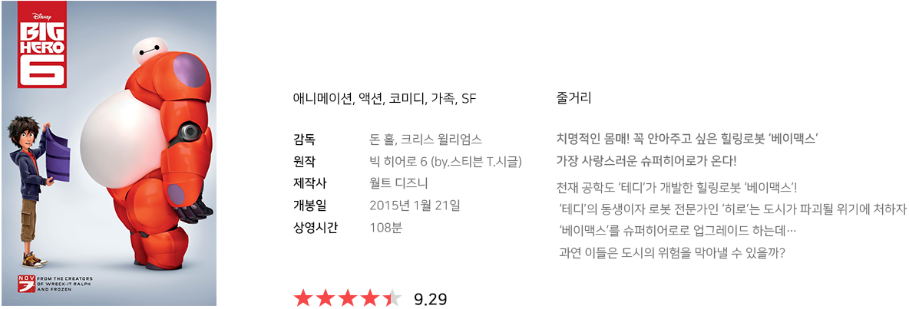

About
빅 히어로
Big Hero, 2016

Characters
와사비Wasabi
“ I have a system :
there's a place for everything, everything in its place. ”
내게는 나만의 질서가 있어. 모든 것에는 맞는 자리가 있고,
모든 것은 제자리에 있어야 해
테디 아르마다의 친구이자 SFT학생인 와사비는 정확성에 집작합니다.
와사비라는 별명은 옷에 고추냉이를 딱 한 번 흘렸던 것 때문에 붙여진 별명입니다.
거대한 덩치와 근육에 어울리지 않는 중증 강박증 환자로 공구를 선에 딱 맞춰서 정리하고
조금이라도 흐트러지면 바로 기겁을 할정도로 세심하고 규칙적인 성격입니다.
그는 아주 똑똑하고 신경질적인 사람이지만, 히로가 그를 필요로 할 때에는 누구보다 든든한 지원군이 되어줍니다.
빅히어로의 한 일원으로 와사비는 엄청난 플라즈마 칼날을 무술 기술로 사용합니다.